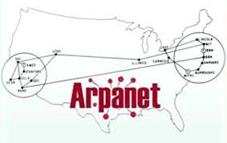

| ARPANET (acronimo di "Advanced Research Projects Agency NETwork", in italiano "Rete dell'Agenzia per i progetti di ricerca avanzati"), anche scritto ARPAnet o Arpanet, fu una rete di computer studiata e realizzata nel 1969 dal DARPA, l'agenzia del Dipartimento della Difesa degli Stati Uniti responsabile per lo sviluppo di nuove tecnologie ad uso militare. Si tratta della forma per così dire embrionale dalla quale poi nel 1983 nacque Internet. |  |
| Arpanet fu pensata per scopi militari statunitensi durante la guerra fredda, ma paradossalmente ne nacque uno dei più grandi progetti civili : una rete globale che collega tutta la Terra. Nel 1958 il Governo USA decise di creare un istituto di ricerca denominato ARPA e il suo compito era ambizioso : cercare soluzioni tecnologiche innovative. Fra gli incarichi dell’Agenzia c’era quello di trovare una soluzione alle problematiche legate alla sicurezza e alla disponibilità di una rete di telecomunicazioni. Il progetto fu sviluppato negli anni Sessanta in piena guerra fredda con la collaborazione di varie università americane, e, secondo molte fonti, aveva lo scopo di costruire una rete di comunicazione militare in grado di resistere anche ad un attacco nucleare su vasta scala. Per tutti gli anni Settanta ARPAnet continuò a svilupparsi in ambito universitario e governativo, ma dal 1974, con l’avvento dello standard di trasmissione TCP/IP il progetto della rete prese ad essere denominato Internet. | |
| È negli anni Ottanta, grazie all’avvento dei personal computer, che un primo grande impulso alla diffusione della rete al di fuori degli ambiti più istituzionali e accademici ebbe il suo successo, rendendo di fatto potenzialmente collegabili centinaia di migliaia di utenti. Fu così che gli utenti istituzionali e militari cominciarono a rendere partecipi alla rete i membri della comunità scientifica, che iniziarono così a scambiarsi informazioni e dati, ma anche messaggi estemporanei ed a coinvolgere, a loro volta, altri utenti comuni. Nacquero in questo modo, spontaneamente, l’e-mail, i primi news group e di fatto una rete : Internet. |